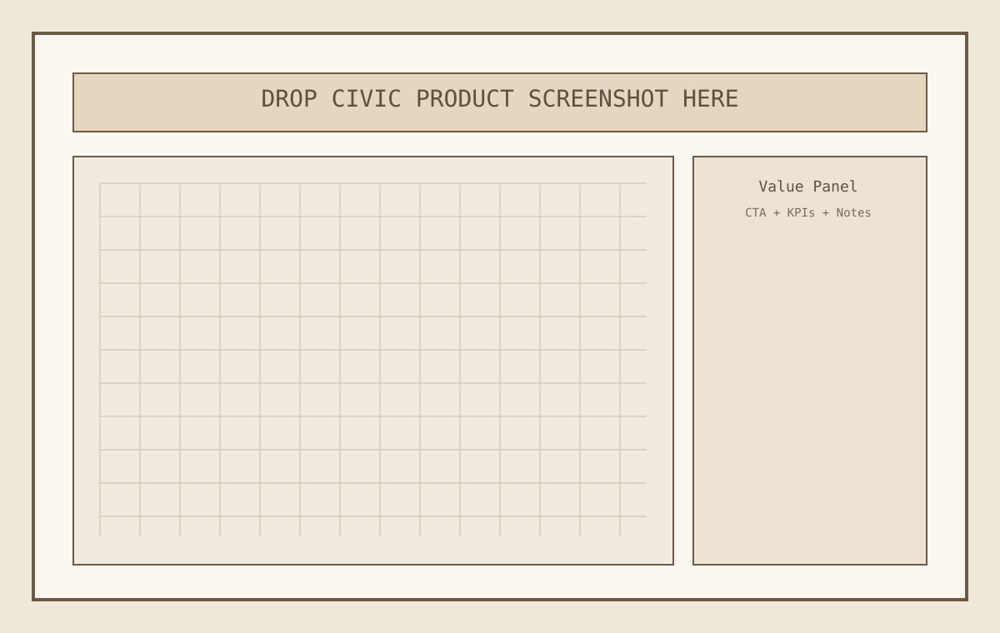

Step 01
Capture footprint and context
Click an existing extruded building or upload Polygon/MultiPolygon GeoJSON. The footprint is cleaned, validated, and prepared for generation.
Civic Fabric Studio is the architect-focused front door to Mapbox Building Generator. It turns context geometry into buildable envelope options with floorplan logic, so teams can move from "what if" to a defensible massing direction quickly and with less iteration waste.
Select a parcel or upload a footprint, adjust envelope and facade controls, and generate coherent stairs, core, and room programs. Toggle floorplan mode to inspect a typical floor at zero pitch and export your geometry to downstream tools.
Rapidly test massing and circulation options before committing to detailed BIM work.
Use presets and visual rules to produce credible concepts without inventing every parameter from scratch.
Keep parcel reality in the loop and export machine-readable outputs for analysis and mapping.
Compare options quickly in the same coordinate context and preserve assumptions in a repeatable workflow.

landing/assets/civic-product-thumb.svg with your product capture.A deterministic pipeline converts map context into architectural geometry. Decorative motion is secondary; the core interaction is predictable control over form, structure, and program.
This p5 preview is a lightweight demonstration of context pressure and corridor emphasis. It supports the story but does not replace the core product UI.
Payoff: Go from parcel click to a coherent, discussable building concept quickly, with enough structure to present to principals, planning teams, or clients in the same session.